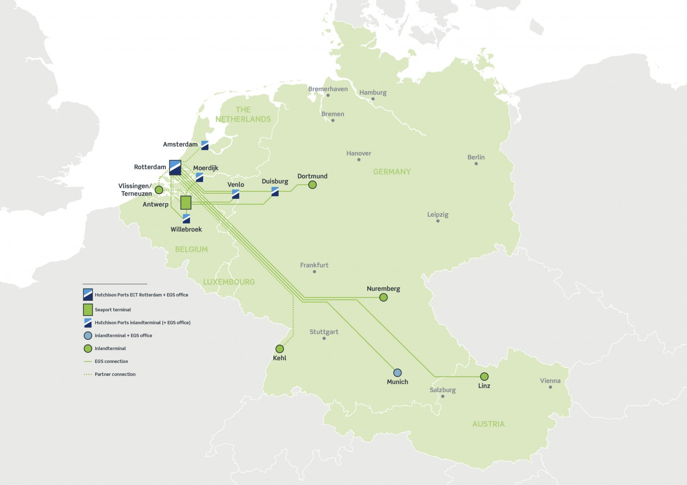

Directly following upon the deepsea transport, European Gateway Services (EGS) offers a great number of sustainable transport services from and to the leading economic centres in Western and Central Europe. General Manager Paul Zoeter explains the advantages of explicitly opting for EGS for container transport.
Our network combines the Benelux, Germany and Austria
Every day, we connect Rotterdam and Antwerp with eleven different inland terminals in the Benelux, Germany and Austria by means of rail and inland shipping. Other parties tend to focus their transport services on one specific region or corridor. The range of EGS is wider and includes a reliable barge connection - the Intercity Barge - within the Rotterdam port region itself. Thus, our customers can benefit from a one-stop-shop solution. Together with them, we are working on further strengthening the network.

Part of one of Europe's largest terminal operators
EGS is part of Hutchison Ports ECT Rotterdam. As such, we have quick and easy access to data relating to the containers arriving at the ECT Delta and ECT Euromax terminals by deepsea vessel. This allows us to optimally plan for the customer. EGS has fixed-window agreements with ECT for various barge connections. This allows for reliable sailing schedules. Through our inland shipping partners, similar agreements are in place at the deepsea terminal of RWG. Moreover, we serve all deepsea terminals in Rotterdam and Antwerp.
Familiar at the Maasvlakte
Where other providers of European transport are based in the hinterland, EGS is rooted at the Maasvlakte. At the heart of Rotterdam’s container handling segment, we have short lines of communication with all terminals. We know how the deepsea sector works and are able to quickly anticipate changes.
Scale offers flexibility and synergy benefits
With more than 40 train departures a week, we are the largest maritime rail operator in Rotterdam. In addition, we offer more than 30 barge sailings every week. That scale makes us flexible. Should a container miss its scheduled train or barge connection due to unforeseen circumstances, then the customer never needs to wait long for the next departure.
Furthermore, the size of our network offers synergy benefits. If the supply of cargo changes, we can shift around the available barge and rail capacity on the various corridors within our network, for example by scheduling an additional barge departure to Nuremberg via Duisburg to meet a customer’s demands.
Total solutions
For all the connections that we maintain, we offer pre-transport and post-transport by truck from the inland terminals that we call at. If we do not directly call at the desired deepsea terminal with an EGS train, we will arrange an efficient internal port transfer from the rail terminal. Customers are always assured of a total solution.
Synchromodality is in our genes
EGS is a pioneer in the creation of synchromodal solutions, whereby the route and mode(s) of transport that are best suited to a specific moment are consistently selected. Speed, costs and sustainability all play a role in this. Synchromodal transport requires the customer to leave the selection of route and modality up to EGS. Such an innovative way of working is not a given in the market. By means of pilots, we are gaining further experience together with customers. Our synchromodal thinking is also reflected in the fact that we offer alternatives if the connection the customer desires is fully booked, for example by offering an alternative route via Munich for a container bound for Nuremberg.
Constant quality improvement
We constantly work with transport partners to further expand and improve our network. Recently, we for example introduced the Limburg Express, a new inland shipping connection between the ECT Delta and the inland terminals in Venlo and Born in Limburg with guaranteed arrival and departure times. From and to Germany, we now operate separate trains to Nuremberg (3x) and Munich (3x). In the past, just one train was involved that would be split halfway through the route. For both destinations, this means longer trains, more capacity and therefore improved service levels. Furthermore, traction partner RTB Cargo uses new Siemens Vectron locomotives for some of our trains. Important advantages of these electric locomotives are the multi-usability on different rail systems, the low energy consumption and the long maintenance intervals. Thus, the EGS rail product becomes even greener and more reliable.
Making a difference in customer service
Last but definitely not least, we want to make it as easy as possible for our customers to use our services. With that in mind, we develop new digital services within EGS, but we also focus on direct customer contact. Customer service is provided from our own EGS offices in the Netherlands (Rotterdam and Venlo), Belgium (Willebroek) and Germany (Duisburg). From booking and monitoring to aftercare, customers are supported locally and in their own language. We aim to really distinguish ourselves in the market in this way as well.
www.europeangatewayservices.com